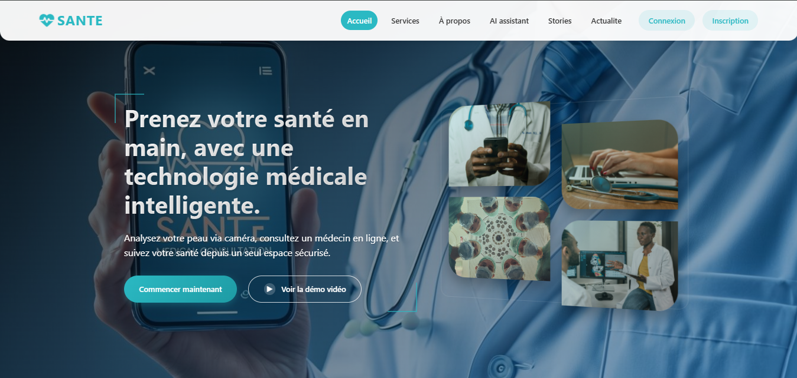
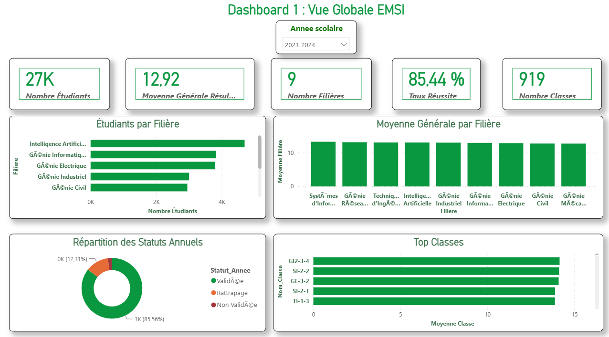
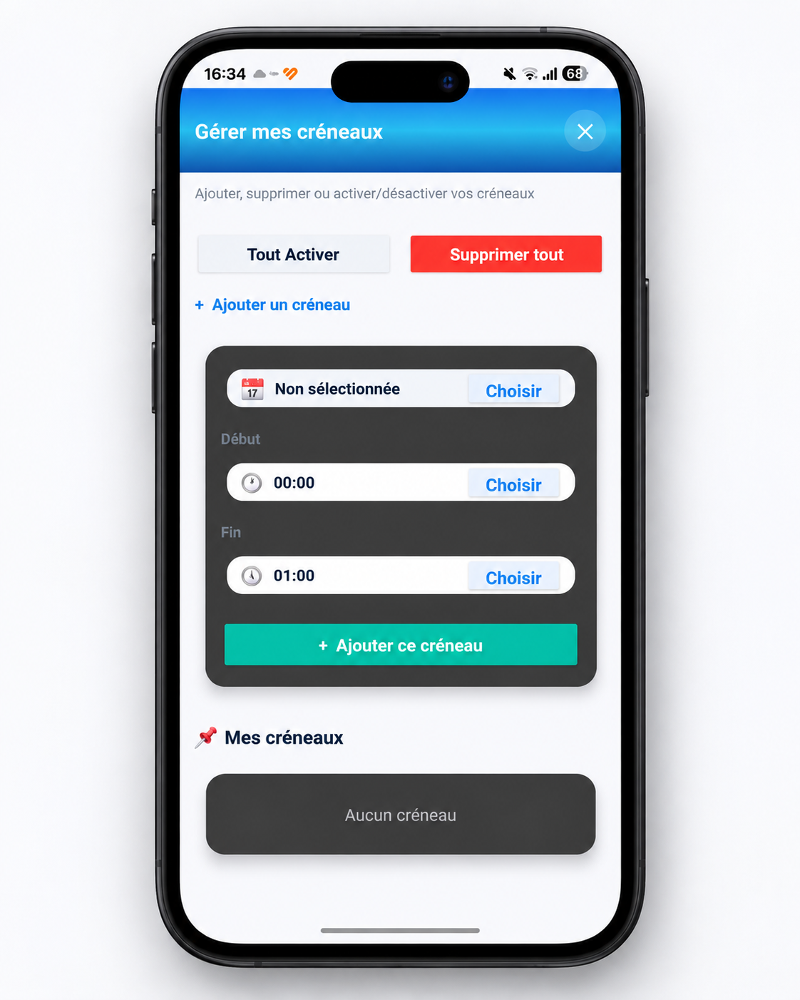
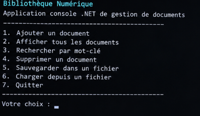
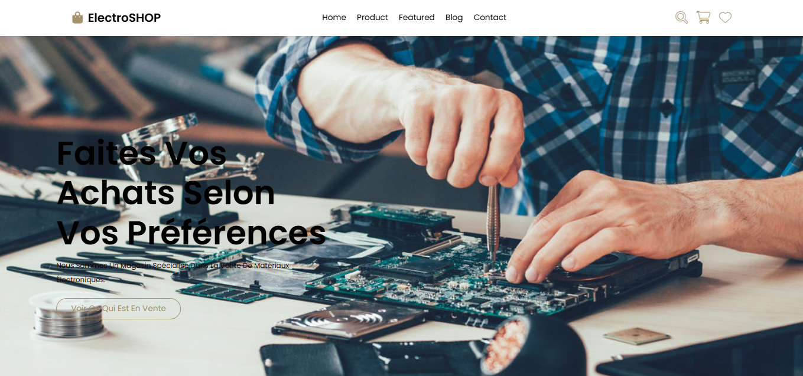
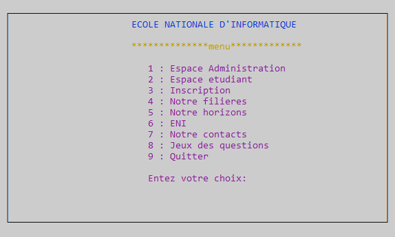

Mon focus actuel
Construire des systèmes AI/Data robustes : ingestion, stockage, traitement distribué, modèles ML/Deep Learning, recherche sémantique, RAG et déploiement via API.
AI • DATA • ENGINEERING
Je conçois des systèmes intelligents, des pipelines de données scalables et des applications IA orientées métier — du traitement Big Data au déploiement.
À PROPOS
Étudiant ingénieur en dernière année en Intelligence Artificielle et Sciences des Données. Je développe des solutions qui combinent Machine Learning, Data Engineering, Big Data, APIs et architectures modernes afin de transformer les données en décisions utiles.
Construire des systèmes AI/Data robustes : ingestion, stockage, traitement distribué, modèles ML/Deep Learning, recherche sémantique, RAG et déploiement via API.
TECH STACK
EXPÉRIENCE
Développement de PayWise, une plateforme intelligente de gestion et d’analyse de la paie, avec architecture Data & IA, détection d’anomalies et tableaux de bord décisionnels.
Observation des processus industriels et conception d’une plateforme interactive pour digitaliser la formation opérateurs et les documents de poste de travail.
PROJETS SÉLECTIONNÉS
 01
01
Plateforme intelligente de Talent Intelligence : analyse de CV, extraction de compétences, matching candidat/poste, recherche sémantique et assistance aux recruteurs.
 02
02
Pipeline Big Data complet avec Data Lake, Data Warehouse, BI et système multi-agents. Recommandation, recherche NLP, fraude, churn et génération d’indicateurs métier.

03Application médicale avec détection cutanée par CNN, chatbot médical, prise de rendez-vous et espaces sécurisés patient, médecin et administration.
 04
04
Pipeline Big Data distribué pour l’analyse de séquences ADN : nettoyage, conversion FASTA, stockage HDFS, jobs MapReduce, statistiques biologiques, pattern matching, alignement et similarité entre espèces, avec dashboard Streamlit.

05Plateforme décisionnelle de Business Intelligence permettant de centraliser et analyser les données académiques afin de suivre les performances des étudiants, les résultats, les absences, les stages et l’insertion professionnelle à travers des dashboards Power BI interactifs.
 06
06
Application Java de billetterie événementielle avec authentification multi-rôles, achat de tickets, fidélité, promotions, gestion des événements et statistiques, avec persistance MySQL et traitements concurrents.

07Application mobile de gestion de cabinet médical avec prise de rendez-vous, gestion des disponibilités, plannings et authentification multi-rôles pour patients, médecins et secrétaire.

08Application Java de billetterie événementielle avec authentification multi-rôles, achat de tickets, fidélité, promotions, gestion des événements et statistiques, avec persistance MySQL et traitements concurrents.
 09
09
Plateforme de bibliothèque numérique interactive intégrant gestion des livres et auteurs, authentification sécurisée, paiement en ligne, statistiques et assistant IA pour les recommandations et l’assistance littéraire.
 10
10
Plateforme web de réservation d’hôtel permettant de consulter les chambres, vérifier les disponibilités, effectuer des réservations et découvrir les services de l’établissement à travers une interface moderne et responsive.

11Boutique e-commerce spécialisée dans les composants électroniques, kits DIY et équipements intelligents, avec catalogue interactif, panier d’achat, gestion des produits et interface responsive.
 12
12
Robot aspirateur intelligent capable de se déplacer automatiquement, de détecter et éviter les obstacles grâce à des capteurs ultrasoniques, avec également un mode de contrôle manuel à distance via Bluetooth pour piloter ses déplacements et son système d’aspiration.

13Un programme complet développé en langage C simulant un système de gestion d’étudiants pour une école d’ingénierie informatique, avec des interfaces dédiées à l’administration et aux étudiants, la gestion des inscriptions, des certificats, des clubs et un jeu-questionnaire.
FORMATION
École Marocaine des Sciences de l’Ingénieur — Tanger
École Marocaine des Sciences de l’Ingénieur — Tanger
École Al Amana — Tanger
CERTIFICATIONS
CONTACT
Je recherche un stage PFE à partir de février 2027 en AI Engineering, Data Engineering, Machine Learning ou Generative AI.